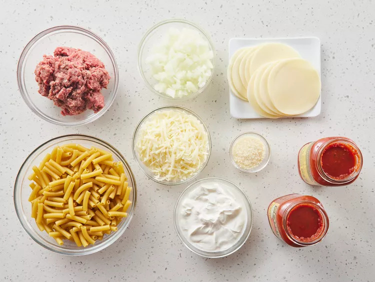
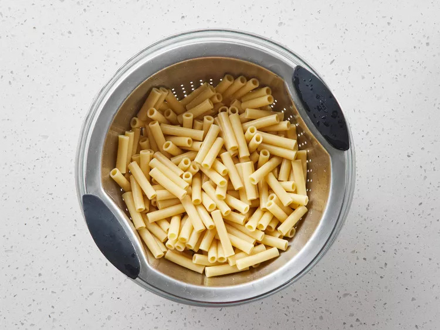
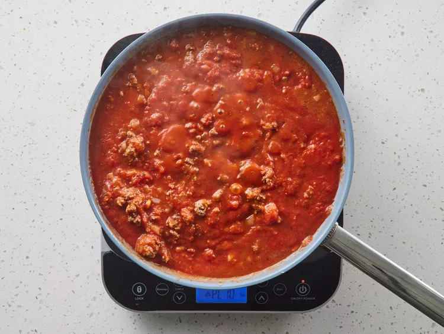
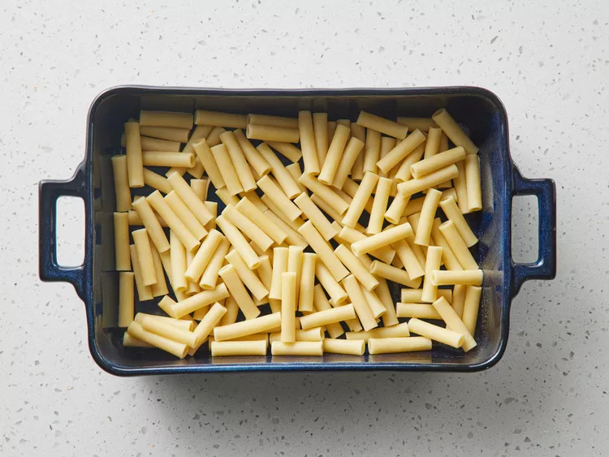
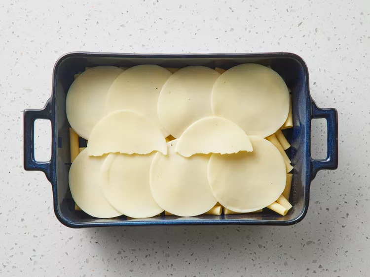
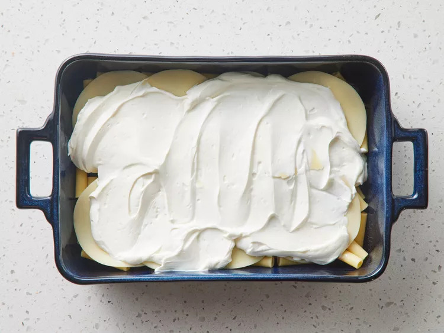
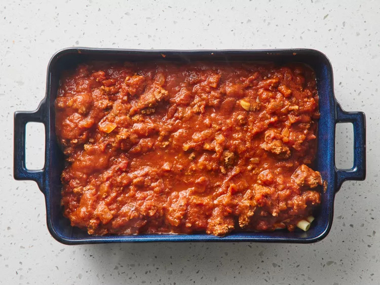
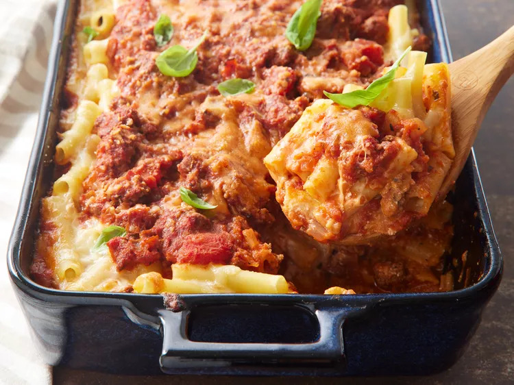

This baked ziti is always a hit! A lady I worked with brought this in one day, and everyone loved it. Now it is the favorite of all my dinner guests. I have made this also without the meat, and it is well received
Gather all ingredients.
Bring a large pot of lightly salted water to a boil. Add ziti pasta, and cook until al dente, about 8 minutes; drain.
Meanwhile, brown ground beef and onion in a large skillet over medium heat; stir in spaghetti sauce and simmer for 15 minutes. Preheat the oven to 350 degrees F (175 degrees C). Butter a 9x13-inch baking dish.
Spread 1/2 of the ziti in the bottom of the prepared dish.
Top with Provolone cheese.
Top with sour cream.
Add 1/2 of the meat sauce, remaining ziti, mozzarella cheese, and remaining meat sauce. Top with grated Parmesan cheese.
Bake in the preheated oven until heated through and cheeses have melted, about 30 minutes.
